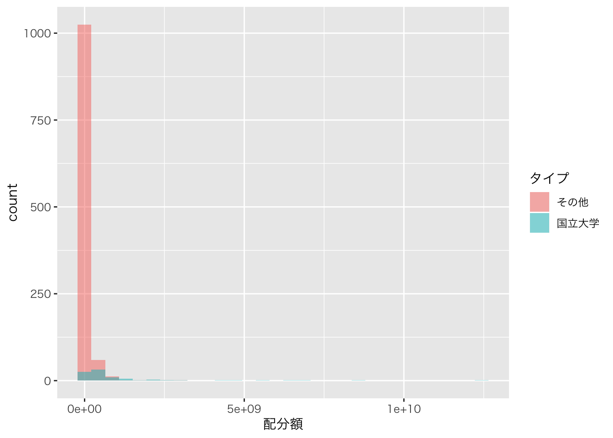
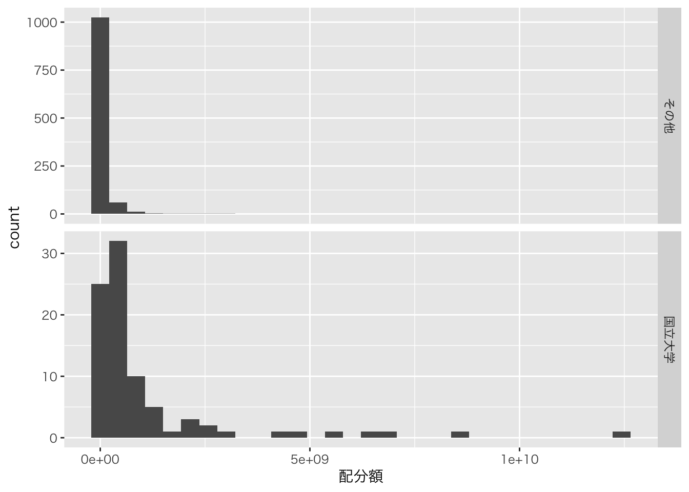

【KAKEN】データの可視化（５）
ー配分額をヒストグラムで可視化ー
Takuya Kubo, 2020/05/20
０. はじめに
このページでは、主にggplot2パッケージを使って研究機関ごとの科研費の配分額の分布をヒストグラムで可視化する方法を紹介していきます。
１. 環境設定
必要なパッケージとデータは以下の通りです。
# インストールされていない場合は、以下のコマンドの「#」を外して実行
# install.packages("data.table")
# install.packages("dplyr")
# install.packages("DT")
# install.packages("ggplot2")
# パッケージの読み込み
library(data.table) # 高速なデータインポートのため
library(dplyr) # データの整理のため
library(DT) # 集計表の出力のため
library(ggplot2) # グラフ化のため今回は2020年度の採択課題データを用いて進めていきます。また、国立大学とその他の機関を比較したいので、事前に作っておいた国立大学リストも読み込んでおきます。このファイルは国立大学の名前のみ羅列してあるのですが、１列のデータフレームとして扱われます。
# 採択課題データのインポート
d <- fread("kaken_2020.csv")
# 国立大学リスト
natl_univs <- fread("natl_univs.csv")
# 可視化
datatable(natl_univs, rownames = FALSE)２. データの集計
group_by関数とsummarize関数を用いて、研究機関ごとの配分額を集計します。その後で「タイプ」列を作成し、研究機関が国立大学の場合は「国立大学」、その他の機関の場合は「その他」と値を入れます。
D <- d %>% mutate(総配分額 = as.numeric(総配分額)) %>%
group_by(研究機関) %>%
summarize(配分額 = sum(総配分額)) %>%
# 研究機関が国立大学である場合に「タイプ」列に「国立大学」を、その他の場合には「その他」とする
mutate(タイプ = ifelse(研究機関 %in% natl_univs$大学名, "国立大学", "その他"))
datatable(D, rownames = FALSE)３. ヒストグラムの描画
それではヒストグラムを描画していきます。最低限のヒストグラムを描画するにはggplot関数とaes関数、そして、geom_histogram関数を用います。これらに加え、以下のコードでは日本語を表示させるためにtheme_gray関数も用いています。
D %>%
ggplot(aes(x = 配分額)) +
geom_histogram() +
theme_gray(base_family = "HiraKakuPro-W3")
ここからグラフを修正していきます。まず、国立大学とそれ以外の大学を区別するため、これらの違いをヒストグラムの色（color）に反映させます。また、２つのヒストグラムを積み上げではなく重なるように表示するため、geom_histogram関数内で「position = “identity”」と指定し、色の透明度（alpha）も調整しています。
D %>%
# タイプ列をヒストグラムの色に指定
ggplot(aes(x = 配分額, fill = タイプ)) +
# それぞれのヒストグラムの書き方を積み上げでなく、重なるように配置＋透明度の調整
geom_histogram(position = "identity", alpha = 0.5) +
theme_gray(base_family = "HiraKakuPro-W3")
科研費に申請している研究者の所属は国立大学以外がほとんどですので、国立大学とその他の大学の両方をプロットすると国立大学の分布が分かりづらくなってしまいます。これを解決するため、これら２つのグループのヒストグラムをfacet_grid関数で分けてみます。facet_grid関数はグラフを指定された変数（列）に従って行と列に分けることができる関数です。以下の例では、タイプ列の値によってグラフを行に分け、それぞれに適した軸範囲となるように指定しています。
D %>%
ggplot(aes(x = 配分額)) +
geom_histogram() +
theme_gray(base_family = "HiraKakuPro-W3") +
# ヒストグラムをタイプ列の値によって行方向に分け、それぞれに適した軸範囲にする
facet_grid(row = vars(タイプ), scale = "free")
グラフとしては随分見やすくなったので、最後に以下の通り体裁を整えて終わりにしたいと思います。
D %>%
ggplot(aes(x = 配分額)) +
# 棒の色を変更
geom_histogram(fill = "skyblue") +
# 白黒テーマに変更
theme_bw(base_family = "HiraKakuPro-W3") +
#ファセットラベルを左側に移動（switch）
facet_grid(row = vars(タイプ), scale = "free", switch = "y") +
# ファセットラベルの角度を変更
theme(strip.text.y = element_text(angle = 180)) +
# y軸のラベルを変更
ylab("機関数")
４. おわりに
今回は科研費の機関ごとの配分額の分布をヒストグラムで描画する方法を紹介いたしました。個人的な印象ですが、ヒストグラムは探索的にデータの特徴を掴みたい時など、比較的に分析の初期段階で用いることが多いような気がします。その際には様々な角度からデータを眺めないといけないのですが、facet_grid関数のように特定の変数の値によってグラフを分ける方法も有効ですので、こちらも合わせて活用いただければと思います。